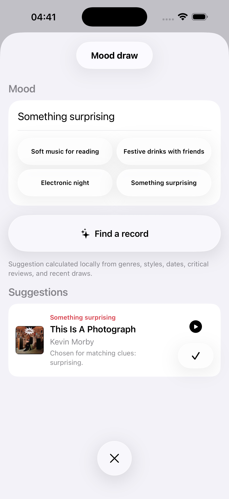

Record Picker samlar rättvisa dragningar, Mood Pick, berikad katalogisering, iCloud, export, dubbletthantering, 29 språk och inbyggda appar för iPhone, iPad, Apple Watch och Mac.
Val i stort formatDatakvalitet
Sidan nedan presenterar huvudfunktionerna i version 1.8 och Mac 1.8-appen, från Free + Pro-samlingar till iCloud-synkronisering, dubbletthantering, recensioner och sekretess.
Funktioner
Metadata från MusicBrainz och Discogs
En välskött samling
Bygg en ren, kontrollerbar och trevlig samling, även när offentliga databaser inte räcker.
Streckkodsläsning använder Discogs som reserv när MusicBrainz inte känner referensen och fyller formuläret automatiskt när Discogs hittar utgåvan.
Metadata från MusicBrainz och Discogs
Streckkodsläsning använder Discogs som reserv när MusicBrainz inte känner referensen och fyller formuläret automatiskt när Discogs hittar utgåvan.
Önskelista skild från lådan
Dubblettdetektering och datakvalitetskontroller
Omslag och visuella data
Omslag och visuella data
Håll samlingen behaglig att bläddra i med omslag som du hämtar eller väljer själv.
Omslagssökning via Cover Art Archive
Manuell import från Bilder eller Filer
Webbsökning när omslag saknas
Återställ originalomslag
Redigering av omslag och visuella data
iPhone-dragning i liggande läge
iPhone-dragning i liggande läge
iPhone-dragning i liggande läge
iPhone-dragning i liggande läge
Metadata från MusicBrainz och Discogs
iPhone-dragning i liggande läge
iPhone-dragning i liggande läge
Statistik
Val i stort format
Rättvis dragning
Välj nästa skiva utan att tappa kontrollen, med slump som håller samlingen levande.
Viktad dragning som gynnar mindre spelade skivor
Filter efter år, genre, format, hastighet och favoriter
Tillfälliga uteslutningar utan att radera
Bläddringsbar historik för att se vad som återkommer
Bläddringsbar historik för att se vad som återkommer
Bläddringsbar historik för att se vad som återkommer

Val efter stämning
Stämningar och uppspelning
Välj efter stämning och behåll ett lyssningsspår så att samlingen fortsätter att visa sig över tid.
Stämningsbaserat val med lokala Apple-modeller när de är tillgängliga
Lokal metadatabaserad matchning när modeller inte är tillgängliga
Berättande statistik med Apple Intelligence på enheten när det finns tillgängligt
Senaste historik över dragna eller spelade skivor
Uppspelningsalternativ
Apple Watch omarbetad
Omslaget ligger som suddig bakgrund, med knappar för favorit, ångra senaste dragning och nästa dragning, var och en med egen haptisk återkoppling.
Omslaget ligger som suddig bakgrund, med knappar för favorit, ångra senaste dragning och nästa dragning, var och en med egen haptisk återkoppling.
Omslaget ligger som suddig bakgrund, med knappar för favorit, ångra senaste dragning och nästa dragning, var och en med egen haptisk återkoppling.
Omslaget ligger som suddig bakgrund, med knappar för favorit, ångra senaste dragning och nästa dragning, var och en med egen haptisk återkoppling.
Layout anpassad från 41 mm till Ultra
Små förbättringar: bättre balanserad omslagsväljare på iPad, snabbare iPhone-Watch-synk och diskret App Store-betygsförfrågan.
Datakvalitet
Bläddring och insikt i samlingen
Bläddra, kontrollera och förstå samlingen utan att lämna appen, med egna gränssnitt för iPhone och iPad.
Snabb navigering i lådan
Önskelista skild från lådan
Enhetliga Liquid Glass-knappar
Läsbara iPad-rader och direkt åtkomst till detaljer från omslag
iPad dra och släpp där det faktiskt hjälper
Dubblettdetektering och datakvalitetskontroller
Dubblettdetektering och datakvalitetskontroller
Metadata från MusicBrainz och Discogs
Bläddringsbar historik för att se vad som återkommer
Säkerhetskopior, import och export
iCloud-synk utan krångel
Inga tredjepartsleverantörer av AI och ingen moln-AI; Apple Intelligence stannar på enheten
Låda, önskelista, lösta dubbletter, uteslutningar, historik, återställbara raderingar och egna omslag följer dina enheter.
Redigering av omslag och visuella data
CSV för kalkylblad och ren JSON, separat för låda och önskelista
Fullständig säkerhetskopia vid behov
Inga tredjepartsleverantörer av AI och ingen moln-AI; Apple Intelligence stannar på enheten
Internetrecensioner hämtas aldrig automatiskt
29 språk
29 språk
Record Picker finns på 29 språk med nya varianter och lokaliseringar: arabiska, katalanska, koreanska, danska, engelska för Australien/Kanada/Storbritannien, finska, kanadensisk franska, hebreiska, hindi, indonesiska, norska, polska, portugisiska, ryska, svenska och turkiska.
Record Picker finns på 29 språk med nya varianter och lokaliseringar: arabiska, katalanska, koreanska, danska, engelska för Australien/Kanada/Storbritannien, finska, kanadensisk franska, hebreiska, hindi, indonesiska, norska, polska, portugisiska, ryska, svenska och turkiska.
Record Picker finns på 29 språk med nya varianter och lokaliseringar: arabiska, katalanska, koreanska, danska, engelska för Australien/Kanada/Storbritannien, finska, kanadensisk franska, hebreiska, hindi, indonesiska, norska, polska, portugisiska, ryska, svenska och turkiska.
Record Picker finns på 29 språk med nya varianter och lokaliseringar: arabiska, katalanska, koreanska, danska, engelska för Australien/Kanada/Storbritannien, finska, kanadensisk franska, hebreiska, hindi, indonesiska, norska, polska, portugisiska, ryska, svenska och turkiska.
Record Picker finns på 29 språk med nya varianter och lokaliseringar: arabiska, katalanska, koreanska, danska, engelska för Australien/Kanada/Storbritannien, finska, kanadensisk franska, hebreiska, hindi, indonesiska, norska, polska, portugisiska, ryska, svenska och turkiska.
Arabiska, hebreiska, hindi, japanska, koreanska, förenklad och traditionell kinesiska
App Store-historik
v2.0
Record Picker 2.0
Kommer i 2.0
v1.9
Record Picker 1.9 introducerar Dagens val: en aktuell och privat anledning att återupptäcka en skiva du redan äger.
iPhone · iPad · Mac · Apple Watch · Tillgänglig nu
Verifierade musiknyheter, viktiga jubileer och valfria konserter i närheten matchas mot din samling enbart på din enhet.
Varje förslag förklarar varför det valdes och anger en daterad källa. Nyheter om önskelistan hålls åtskilda från skivor du kan spela.
Valfria privata påminnelser, relevansfeedback och Dagens val på Apple Watch hjälper till att hålla förslagen användbara. Din samling skickas aldrig till nyhetstjänsten.
v1.8
Record Picker 1.8 samlar iPhone, iPad, Apple Watch och Mac under samma versionsnummer.
Fler fysiska format: vinyl, CD, SACD, hybrid-SACD, MiniDisc, kassett, DVD-Audio, Blu-ray Audio och stenkaka.
Särskilda klassiska fält för verk, katalognummer, dirigenter, orkestrar, ensembler, solister samt inspelningsdatum och -platser.
Tydligare CSV-import och -export med det neutrala fältet ”Media Format”, samtidigt som äldre filer förblir kompatibla.
Tillförlitligare säkerhetskopior, favoriter, omslag, importer och metadatakorrigeringar.
Skiljer tillförlitliga korrigeringar som appen kan göra från val som kräver ditt beslut, med källa och tillitsnivå för varje förslag.
Jämför konflikter mellan MusicBrainz och Discogs sida vid sida. Reparationskön kan återupptas och innehåller CSV-rapport och ångra-funktion.
En ny guide i fyra steg presenterar import, datakvalitet, Random Pick, Mood Pick och Free/Pro.
Skivsidor visar först det ursprungliga utgivningsåret och behåller samtidigt det exakta året för utgåvan.
v1.6
Record Picker är gratis, med Lifetime Pro och en inbyggd Mac-app
Record Picker är nu gratis för samlingar på upp till 100 poster; ett engångsköp av Pro låser upp en obegränsad samling på iPhone, iPad och Mac, utan prenumeration.
Den nya inbyggda Mac-appen förvandlar den stora skärmen till ett kommandocenter för att bläddra, berika, städa upp och återupptäcka samlingen.
iCloud-synkronisering är mer lyhörd, med dess status nu synlig i ett dedikerat Sync Center.
CSV-importer skyddar nu befintliga favoriter; du kan också återställa favoriter endast från en tidigare säkerhetskopia utan att ersätta den nuvarande samlingen.
Dubblettdetektering är mycket snabbare, urval av granskningar är bättre och omindexering av granskningssökord visar nu tydliga framsteg.
Rensa lagringsdiagnostik rapporterar problem istället för att få ett fel att se ut som dataförlust.
v1.5
Starkare synk, konstverk och datakvalitet
Mer pålitlig iCloud-synkronisering över iPhone, iPad och Apple Watch.
Konstverk läggs nu till automatiskt efter manuell eller streckkodsinmatning, med mer robusta alternativ.
Förbättrade verktyg för datakvalitet, dubbletthantering och hämtning av kritiska granskningar.
v1.4
Återupptäck samlingen med rättvisa dragningar, omarbetad Apple Watch, tydlig låda, 29 språk och import/export för samlare.
iPhone-dragning i liggande läge
iPhone-dragning i liggande läge
Bläddringsbar historik för att se vad som återkommer
Önskelista skild från lådan
Statistik
Små förbättringar: bättre balanserad omslagsväljare på iPad, snabbare iPhone-Watch-synk och diskret App Store-betygsförfrågan.
v1.3
Apple Watch omarbetad, Discogs som reserv och 29 språk
Omslaget ligger som suddig bakgrund, med knappar för favorit, ångra senaste dragning och nästa dragning, var och en med egen haptisk återkoppling.
Layout anpassad från 41 mm till Ultra
Streckkodsläsning använder Discogs som reserv när MusicBrainz inte känner referensen och fyller formuläret automatiskt när Discogs hittar utgåvan.
Record Picker finns på 29 språk med nya varianter och lokaliseringar: arabiska, katalanska, koreanska, danska, engelska för Australien/Kanada/Storbritannien, finska, kanadensisk franska, hebreiska, hindi, indonesiska, norska, polska, portugisiska, ryska, svenska och turkiska.
Små förbättringar: bättre balanserad omslagsväljare på iPad, snabbare iPhone-Watch-synk och diskret App Store-betygsförfrågan.
v1.2
Katalog, smart val och Apple Watch-följeslagare
Komplett musikkatalog för import, manuell albumregistrering och streckkodsskanning.
Animerat slumpval, årsfilter, favoriter, tillfälliga uteslutningar, lyssningshistorik och samlingsstatistik.
Stämningsbaserat val med lokala Apple-modeller när de är tillgängliga, annars matchning på enheten från samlingens metadata.
MusicBrainz-metadata, Cover Art Archive-omslag eller manuell omslagsimport, säkerhetskopiering/återställning, Siri-genvägar och Apple Watch-kompanjon.
Samlingen förblir lagrad lokalt; metadata- och omslagssökningar sker bara när användaren startar dem.
v1.1.1
App Store-förbättringar
Gränssnitt och interna grunder har finputsats för en smidigare upplevelse.
Förbättrat iPad-stöd.
Stämningsbaserat val med bättre användning av kritiska recensioner.
Datakvalitet: skivdetaljer, manuell radradering och Discogs/MusicBrainz-sökningar.
Saknade spår: MusicBrainz-sökning följd av Discogs-sökning.